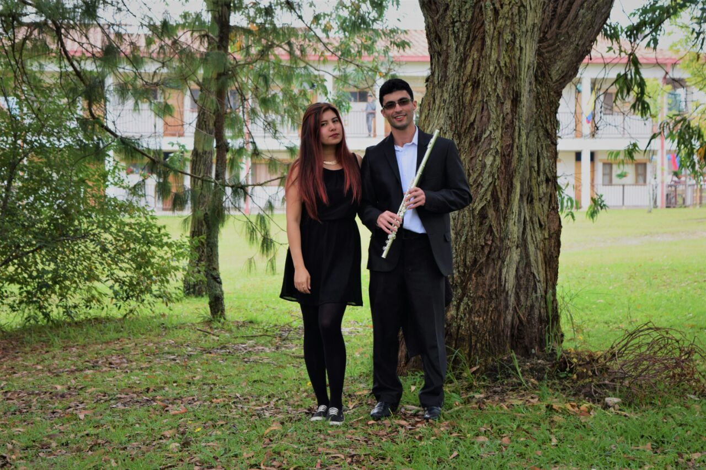

Somos una agrupación de músicos integrada por Diego León Serna Tangarife estudiante de guitarra clásica y Heidy Julieth Hernández Elejalde estudiante de canto lírico, ambos de la Universidad de Antioquia. El grupo surgió en El Carmen de Viboral - Antioquia hace 3 años. El grupo ha obtenido gran reconocimiento en el oriente antioqueño gracias a diversas participaciones en fiestas de la Antioqueñidad y diversos eventos en los municipios de el oriente Antioqueño.
